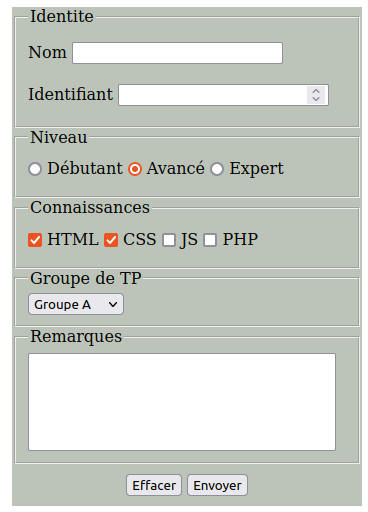
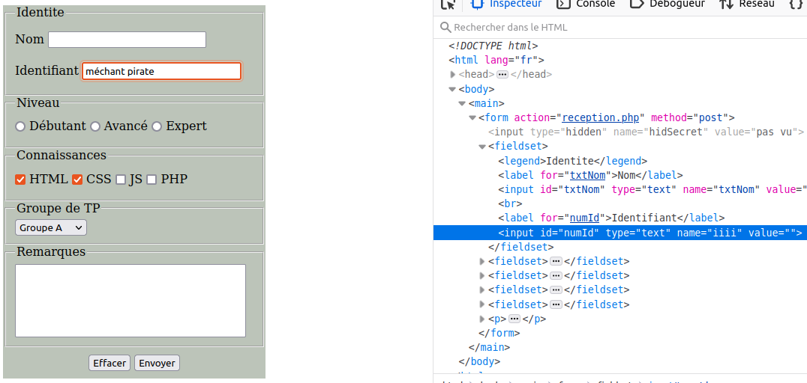
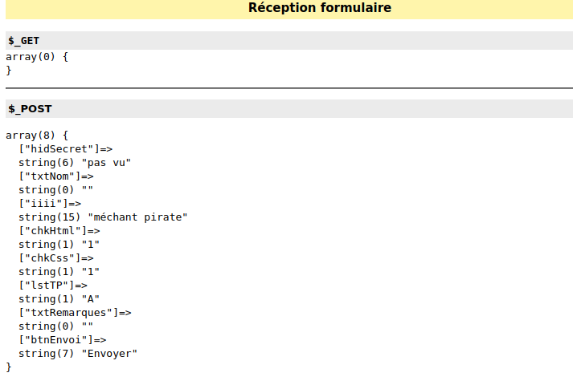

Les formulaires constituent une des seules façons d'établir un dialogue interactif avec l'utilisateur en mettant à sa disposition divers types de zones de saisie qu'il peut utiliser pour envoyer des informations au serveur pour traitement.
Les formulaires sont donc utilisés massivement dans tous les développements de web dynamique et en constituent un des mécanismes de base qu'il faut parfaitement connaître et maîtriser.
Dans l'exemple suivant, nous utilisons quelques-unes des zones qu'il est possible de trouver dans un formulaire, et voir comment nous pouvons récupérer les données saisies dans un script PHP.

Cliquez
ici
pour ouvrir un nouvel onglet affichant le formulaire. Code
HTML
Quand vous soumettez le formulaire en cliquant sur son bouton
submit, le script spécifié dans l'attribut
action de l'élement HTML form (ici
reception.php) est appelé avec la méthode
spécifiée dans l'attribut method (ici
GET) : une requête HTTP GET est envoyée au serveur.
Le script reception.php fait essentiellement un var_dump() des tableaux superglobaux $_GET et $_POST
<?php
require_once 'bib_fonctions.php';
htmlDebut('Réception formulaire');
echo '';
htmlInfo('$_GET');
var_dump($_GET);
echo '';
echo '
';
htmlInfo('$_POST');
echo '';
var_dump($_POST);
echo '
';
htmlFin();
Observations :
Si le visiteur ne modifie pas l'URL, le script reception.php reçoit obligatoirement
dans $_GET des éléments de clés égales à
hidSecret,
txtNom,
numIdentifiant,
radNiveau,
btnEnvoi,
lstTP,
txtRemarques
correpondant respectivement aux input de type
hidden,
text,
number,
radio,
submit, et aux éléments
select et textarea.
Des éléments de clés égales à
chkHtml,
chkCss,
chkJs,
chkPhp correpondant aux input de type
checkbox ne sont reçus que si le visiteur sélectionne les options correpondantes.
Le bouton de réinitialisation (input de type reset) n'est pas un bouton d'effacement des zones du formulaires. Il remet les zones dans l'état où elles étaient avant que l'utilisateur ne les modifie. Bien sûr, si les zones étaient vides on aura l'impression que l'action du bouton a été d'effacer leur contenu, mais ce n'est pas ce qui est fait en réalité.
Le formulaire situé ici
est une copie du précédent avec deux
Code
HTML modifications : l'attribut
method du formulaire est égal à post
et
le choix par défaut pour le bouton radio est supprimé.
N.B. : le script appelé lors de la soumission du formulaire est le même que dans l'exemple précédent.
Lorsque le formulaire est soumis, une requête HTTP POST est envoyée par le navigateur au serveur.
Observations :
Remarque : si vous éditez et modifiez le code HTML du formulaire (clic droit sur la page, puis sélectionner Inspecter), vous pouvez toujours envoyer n'importe quelle donnée au script reception.php. On peut donc toujours recevoir n'importe quoi cette fois-ci dans le tableau $_POST. Cf. Captures d'écran ci-dessous.


Insistons sur le fait que toutes les valeurs des élements des tableaux $_POST et $_GET sont de type string.
Il est préférable d'utiliser la méthode POST pour transmettre les données saisies dans un formulaire pour au moins 2 raisons :